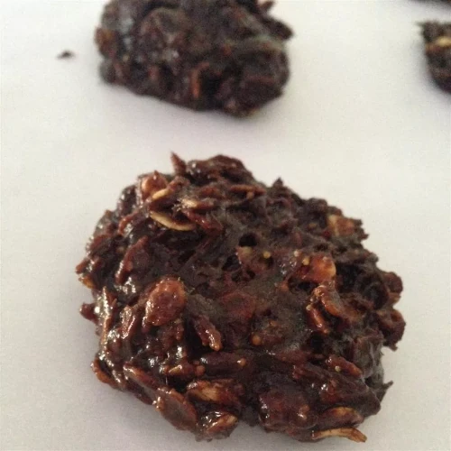

No Bake Chocolate Oatmeal Cookies
Home
A great chocolate outmeal cookie, and couldn't be easier to make!

Indgredients
- ⅔ cup maple syrup
- ¼ cup vegetable oil
- 5 tablespoons unsweetened cocoa powder
- 1 teaspoon ground cinnamon
- ½ cup peanut butter
- 1 cup rolled oats
- 1 teaspoon vanilla extract
Steps
- In a saucepan over medium heat combine the maple syrup, oil, cocoa and cinnamon.
- Boil for three minutes, stirring constantly.
- Remove from heat and stir in the peanut butter, rolled oats and vanilla until well blended.
- Drop by heaping spoonfuls onto waxed paper and chill to set, about 30 minutes.